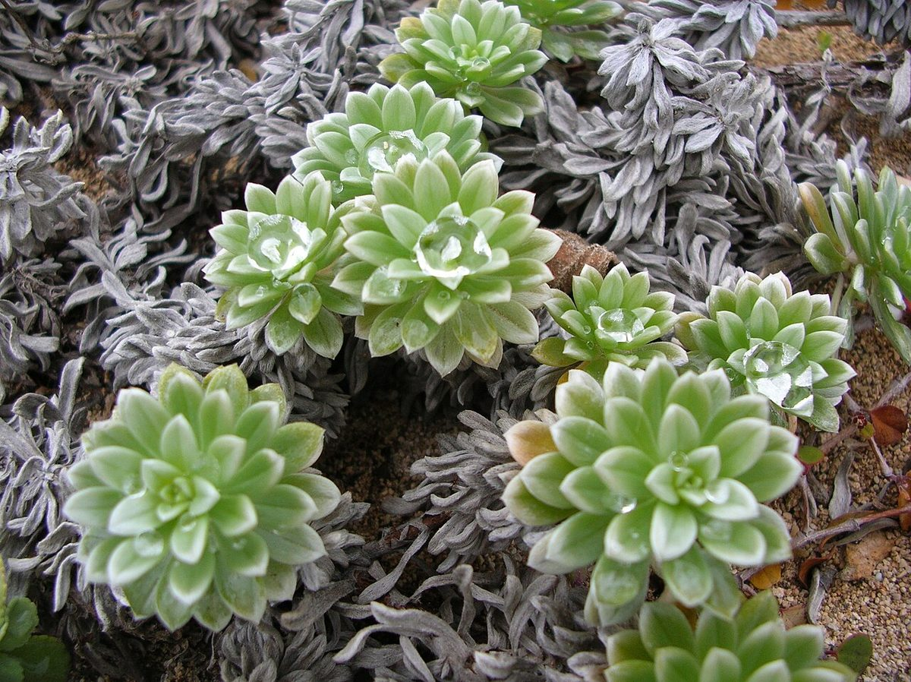
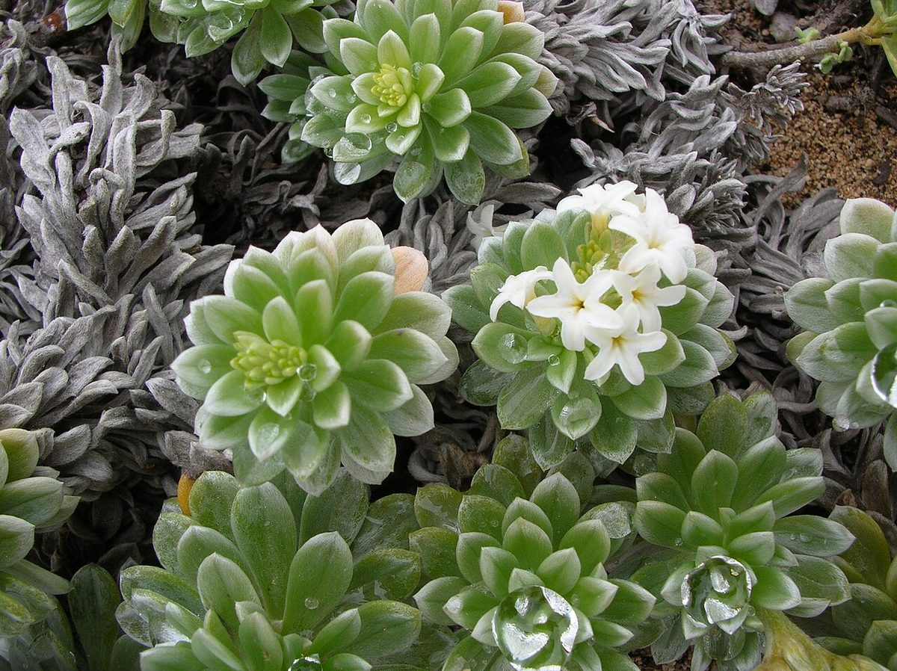
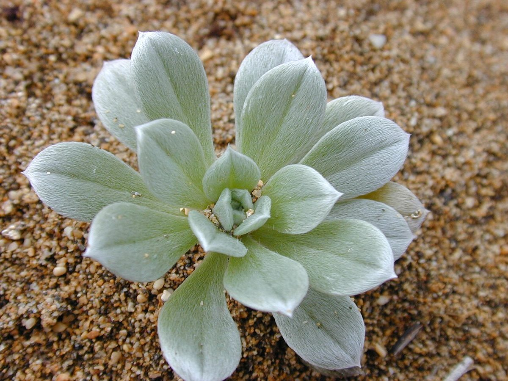

Heliotropium anomalum var. argenteum
hinahina kū kahakai, hinahina · beach heliotrope, seaside heliotrope



Quick facts
| Family | Boraginaceae |
|---|---|
| Scientific name | Heliotropium anomalum var. argenteum |
| Hawaiian name(s) | hinahina kū kahakai, hinahina |
| English name(s) | beach heliotrope, seaside heliotrope |
| Status | Indigenous (native, non-endemic) |
| Conservation | — |
| Coastal zones | Beach strand Dune |
| Occurrence | Silvery mat-forming perennial of open sandy strand and low fore-dunes. On the roadless coast of Kauaʻi it occurs sparingly on stabilized dune edges (Kalalau, Miloliʻi) and back-beach flats at Māhāʻulepū; the variety *argenteum* is the Hawaiian silvery expression of a pantropical species. |
How to identify
- Growth form
- Prostrate to low-mounding perennial forming a silvery-grey mat 5–20 cm tall from a woody rootstock, branching horizontally along the sand surface.
- Size
- Mats 20–80 cm across, only a few centimetres tall.
- Leaves
- Linear-oblanceolate, 1–4 cm long and 2–5 mm wide, densely clothed on both faces in appressed silky white hairs that give the whole plant its characteristic silvery-white sheen. Leaves are crowded in dense rosettes at the tips of the branches.
- Flowers
- Small white 5-lobed tubular flowers about 4–6 mm across with a distinct yellow throat, borne in tight scorpioid (curled to one side) cymes at branch tips. The coiled inflorescence is a hallmark of the family (Boraginaceae).
- Fruit / seed
- Small dry nutlet splitting into 2–4 seed-bearing segments.
- Bark / stem
- Woody at the base, silvery-hairy on younger growth.
- Where it sits on the coast
- Open sandy strand and low back-dune above high tide; needs sunlight and unstable sand. Absent from rocky sea-cliff faces.
Clinchers (features that lock the ID)
- Silvery-white mat plant on bare sand — the whole plant reads as silver at 3 m.
- Dense terminal rosettes of linear-oblanceolate silky leaves clustered at branch tips.
- Tight coiled scorpioid cymes of tiny white flowers with yellow throat — a Boraginaceae signature.
Look-alikes
- Nama sandwicensis (hinahina kuahiwi, endemic) — Nama forms lower prostrate mats with narrower, less-silvery leaves and larger, funnel-shaped white flowers with a purple throat (about 1 cm across, not tiny). Hinahina kū kahakai has a distinctly silvery cast that Nama lacks.
- Heliotropium curassavicum (kīpūkai, indigenous) — Kīpūkai is greener, glabrous (hairless) and fleshier, forming mats on saline flats rather than open dune. Its flowers are also small and coiled, but the whole plant is green rather than silver.
Ecology
Salt-spray-tolerant strand pioneer that stabilizes bare sand alongside pōhuehue and ʻakiʻaki. Its dense silvery indument reflects light, reducing water loss on sun-exposed dune surfaces. Populations on the main Hawaiian Islands have been reduced by beach development and competition with introduced beach vitex and sandbur. [16], [21], [22], [27], [29]
Cultural significance
Hinahina is one of the classical Hawaiian lei plants and is the official island flower of Kahoʻolawe. Its cultural role in lei-making is well-documented; this guide names that significance and credits Hawaiian lei-makers who continue the practice, without giving harvest or lei-preparation instructions.